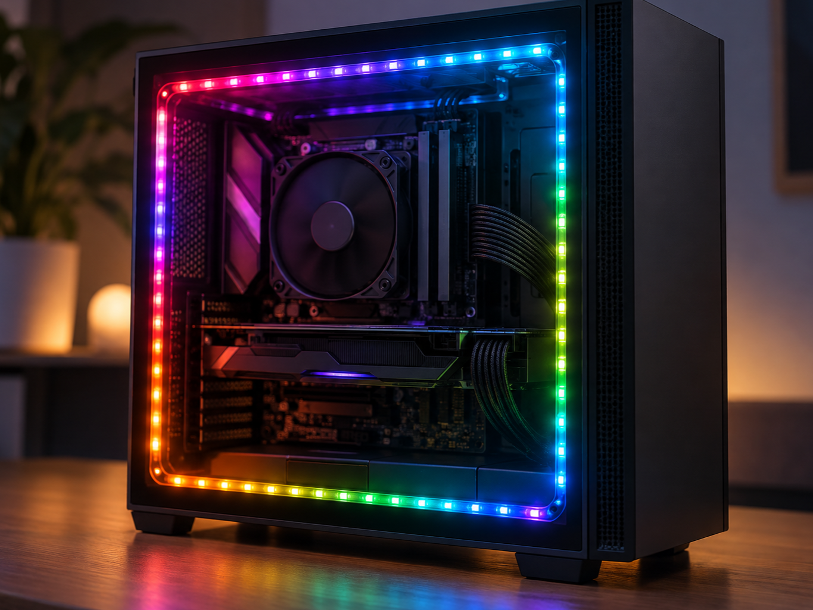
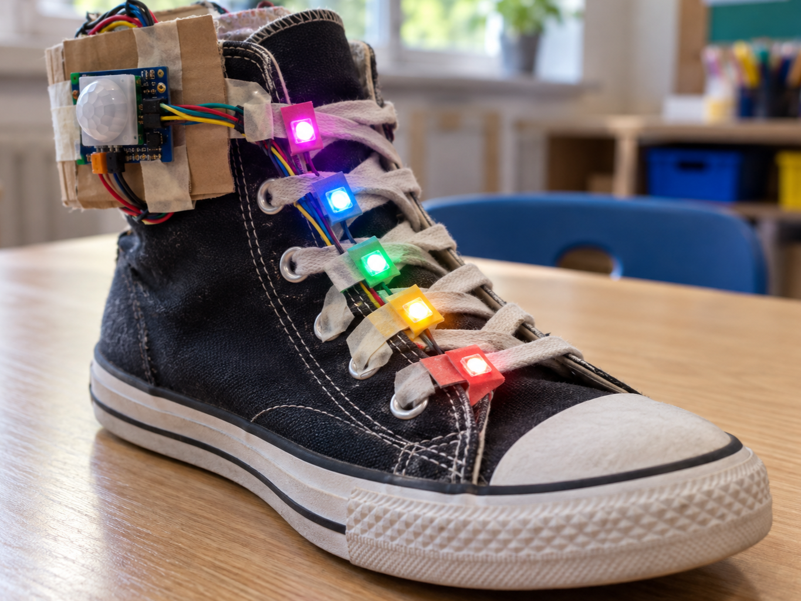
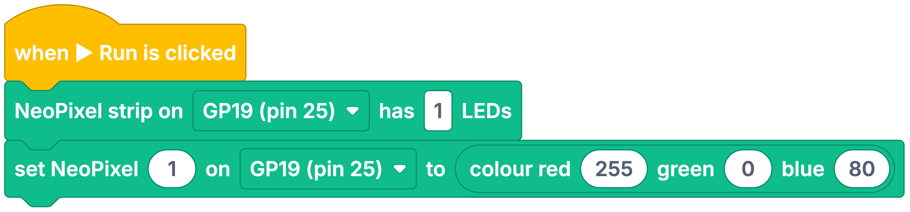

Gaming PC lighting
DetectRead lighting selection
DecideWhich colour should each pixel be?
DoLight individual pixels
A NeoPixel is a full-colour LED with a tiny controller built into it.
One data wire carries colour instructions, and each pixel passes the remaining instructions onwards.
The 3.3 V-compatible JST breakout shown here can connect directly to a Pi or Pico.


